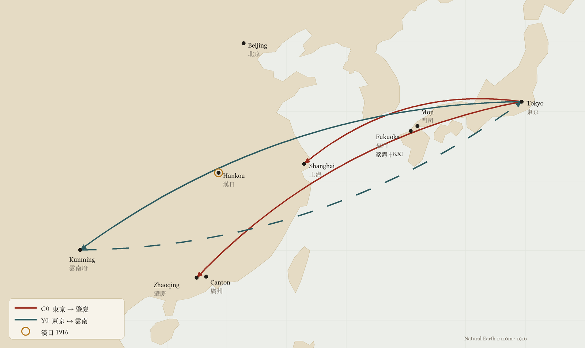

Featured · Discovery · 1915–1916
The Rosamonde telegrams
Twenty-two telegrams that the Japanese authorities copied in 1915 and 1916, without translating them, are in English, enciphered by a simple letter substitution. As far as we know, they are the earliest known messages exchanged directly between Sun Yat-sen and Soong Ching-ling, eight months before their marriage. Sun urges her to break with a suitor, Yung: “I ask ye to throw of[f] Yung at once. If not I will surely die”, “our souls are mingled i[n]to one” — and, from Shanghai, probably her reply: “Lovesick … in torture. Be merciful. Come or free me forever.”

Historical cryptography · China · Japan · 1916
文密
The Wenmi code, broken*
In the summer of 1916, a Chinese envoy in Tokyo, Zhao Shen, was negotiating Japanese rifles, aircraft and loans for the rebel provinces of southern China. His enciphered telegrams (those of the Military Affairs Council channel usually carry the name 文密, Wenmi, in clear) were intercepted and copied by the Japanese administration, then lay for more than a century in Tokyo's diplomatic archives. Both channels he used in 1916 can now be read, for the most part.
The 1916 Wenmi: Zhao Shen's cipher between Tokyo and the Military Affairs Council, which bears this name in clear, and the one, built the same way, of his telegrams to Yunnan (June–November 1916). The enciphered telegrams of June 1917 (Sun Yat-sen ↔ Dai Jitao) do not bear this name and use a different system: they have not been broken.

2429 1378 read 文密 in the Chinese telegraph code; the enciphered words follow. Deciphered: 報傳取消日人態度遽變確否速示俾便行止伸. JACAR B03050090000, image 0416.1915–1917: finding your way through the correspondence
Selected milestones, not to scale. Document dates are separate from the attribution of their authors.
- Historical contextSun Yat-sen and Soong Ching-ling marry in Tokyo.
- Historical contextYunnan rises against Yuan Shikai’s imperial project.
- Historical contextSun returns to Shanghai; Soong Ching-ling joins him on 19 May 1916.
- Historical contextDeath of Yuan Shikai.
- Undeciphered systemSun ↔ Dai Jitao: a different system, still undeciphered.
Discovery
The Rosamonde telegrams (1915–1916)
An enciphered English correspondence between Sun Yat-sen and Soong Ching-ling, intercepted by the Japanese authorities: the system (a reciprocal substitution), the twenty-two telegrams and the cross-checks with the couple's history.
Read the discovery →New decipherments
Twenty unpublished telegrams of 1915
Tokyo ↔ Shanghai, New York → Sun Yat-sen, Manila: the Twenty-One Demands seen from America, Inuzuka's money, the rumour of March 1915 about Sun's health; three new condenser tables.
See the telegrams →
Article 1 · Background
Rifles, loans and telegrams: Sun Yat-sen’s networks, 1913–1916
Who were Sun Yat-sen, Yuan Shikai, the "Military Affairs Council"? Why did a Chinese envoy in Tokyo encipher his messages, and why did Japan copy them? An introduction for readers new to Chinese history, followed by what the telegrams say.
Read the article →
Article 2 · Technical write-up
Breaking Wenmi: from letter structure to two parameter-free keys
Blind transcription, keyless tests, constrained simulated annealing, validation on held-out messages, and finally the G0 and Y0 grids. The dead ends matter, so we describe them, along with the tools and the code.
Read the write-up →Corpus
The telegrams, one by one
The 17 Wenmi texts, 24 reread 1916 condensers, 35 other decipherments from April–June 1916, 20 condensers from 1915, 16 from February–March 1916 and the batch of 50 unpublished telegrams from 1913–1916: transcriptions, codes and characters, with uncertainties retained.
See the telegrams →Follow-up
The 1916 condenser telegrams revisited
The 24 March–May 1916 condenser telegrams reread on the scans: 71 characters amended, 28 in the first review and 43 in targeted reviews, a missing word restored, names and dates identified.
See the corrections →New decipherments
Thirty-five telegrams of April–June 1916, unpublished
Tokyo ↔ Shanghai (Junzaburo / Linwailuk), Manila → Tōyama and Honolulu → Tokyo: telegrams of Sun Yat-sen's circle absent from the published transcriptions, deciphered with known keys and two new tables (“Thirtyeight” and Huang Xing's), doubtful points checked against the image — including replies signed 文 (Sun Wen).
See the telegrams →Research · June 1916
Gongmi: two telegrams, a candidate method
Telegram N17 and N18, their digit-by-digit readings, JACAR scans, and the limits of candidate model C51.
Read the discovery →Decipherment · June 1916
Rongmi: eleven telegrams and their key
Huang Xing, Zhang Xiaozhun and Zhejiang: buying arms in Japan, loans, negotiations with Beijing after Yuan Shikai’s death. A single key, found in October 2026.
Read the telegrams →In the 1915 telegrams
- Sun Yat-sen and Soong Ching-ling. From February to July 1915 Sun writes from Tokyo to Ching-ling, then at her parents' home in Shanghai, in enciphered English: “Yes, I'll save you or die myself if fail”. He asks her to break with a suitor, “Yung”, teaches her to encipher (“Must write it at home, never do it in office, for [t]hey see”) and follows her return by wireless (“Are you land Kobe or Yoko?”). In July, from Shanghai: “Come or free me forever” (Rosamonde).
- The Twenty-One Demands, seen from New York. On 20 February 1915 a telegram signed “Lin and others” (林等, probably Lin Sen) warns Sun: 「日要求廿一款全載美報，直以韓待我，亡無日矣」 — Japan's demands are published in America, “we are treated like Korea” (20/2/1915).
- One rumour, two ciphers. On 9 March Shanghai worries about Sun's health; he answers that evening in enciphered English (“I a[m] well and sound usual”) and, the next day, in Chinese code: 「上海近日有何謠言關弟自[身]安寧者否？」 (10/3/1915).
- Money. Transfers to Hong Kong, funds exhausted, Mr Inuzuka called upon (26/2, 27/2, 7/3/1915).
In the new telegrams (April–June 1916)
- Sun Yat-sen replies himself. On 5 May, from Shanghai, a telegram signed 文 (Sun Wen) orders banknotes — 20,000 of 100 yuan, 80,000 of 10 yuan — and leaves the decision to his correspondent: 「請兄酌奪」 (0031b).
- Huang Xing’s return, followed in three telegrams. On 30 April, from Honolulu, a telegram signed Tiecheng (probably Wu Tiecheng) announces that he is “going on to Japan” (0011b); on 10 May, Tokyo: “arrived yesterday, he is avoiding visitors” (0042a); on 15 May: “saw Huang Xing today”, followed by his views and by what the Japanese General Staff says about Shandong (0056).
- The Shandong campaign seen from Tokyo. Zhoucun taken on 4 May, Weixian attacked, morale “excellent” (0034); more than a hundred cadets of the military school who came to Tianjin have signed a pledge (0056).
- “Yuan the traitor is dead.” On 7 June, the day after Yuan Shikai’s death: 「袁賊旣死，速定大計」 (0156).
- A new cipher table. Two telegrams carry the prefix “Thirtyeight” and read with a table we recovered; one announces that a box has been handed to Inuzuka and will leave by a French ship (0045a; Method).
- A second new table: Huang Xing's. In late May – early June, the telegrams of Huang Xing, then in Tokyo, and Sun Yat-sen's replies read with a table we recovered which, as far as we know, had not been published: on 3 June Huang Xing saw Tanaka — “2,000 rifles and 6 guns can be shipped shortly” (0145; Method). Not to be confused with the three-kana code of another telegram of Huang Xing (25 May 1916, to Lin Hu and Li Genyuan), whose system was identified by D. Bourdeau and whose formula by S. Tomokiyo[22][23].
Where things stand
Both 1916 channels are broken in principle: in each, a regular grid turns each half of a telegraph code into a syllable.
- Rosamonde telegrams (1915–1916, 22 enciphered English texts): reciprocal substitution; the initial sample of 20 texts underwent independent readings, while the two additions of 6 and 7 March 1915 used prefilled review R23. Uncertain passages on 9 March 1915 and the May 1916 names “Chang Ki” and “Tai” remain marked. See Rosamonde.
- 1915: twenty condenser telegrams, three new tables and the published Manila, Shanghai and San Francisco tables; 53 doubtful characters and 1 illegible out of 446, marked. Telegrams. Sixteen telegrams of February–March 1916 from the same batches are published too (one new table, “Thirteenth”; 48 doubtful characters and 1 illegible out of 741): Chen Qimei's illness, the funds for the action in Shanghai, Long Jiguang, the Second Squadron, the independence of Guangxi, aircraft bought in San Francisco; see Telegrams.
- Tokyo → Zhaoqing (June–September, 7 telegrams, G0 grid): text settled for the most part: 12 doubtful characters out of 351 (3.4%), 7 after the proposed readings (2.0%), marked.
- Tokyo ↔ Yunnan (July–November 1916, 15 forms combined into 10 texts, grid Y0, broken on 11 October 2026): fully reread by a human; 24 doubtful and 2 illegible characters out of 456, or 26 uncertain (5.7%), of which 5 remain without a proposed reading (1.1%).
- The condenser telegrams of March–May 1916 (deciphered and published[1, 2]) were re-read on the scans: 28 characters corrected (1916 condensers), then 43 more during the targeted checks of doubtful codes (13 and 14 October 2026); they are given letter by letter at the end of the Telegrams page.
- New decipherments (April–June 1916, unpublished as far as we know): 35 telegrams absent from the published transcriptions, read with known keys and two new tables (“Thirtyeight” and Huang Xing's, see Method); 82 doubtful and 3 illegible characters out of 1,286 (6.6%, after the targeted checks of 13, 14 and 15 October 2026), marked; see Telegrams. Telegrams still being read are not published.
- The enciphered messages of June 1917 (Sun Yat-sen ↔ Dai Jitao) are not broken: they use a different alphabet. Reading, possible confusions and leads: Telegrams.